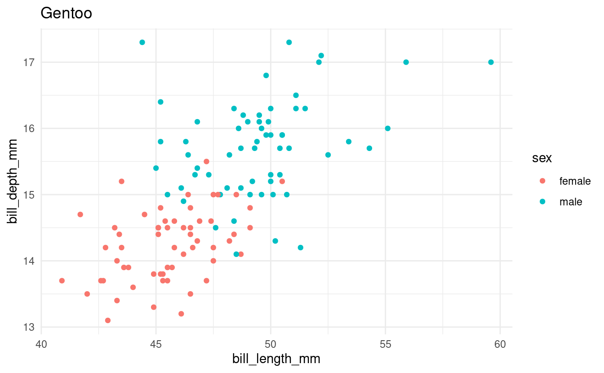
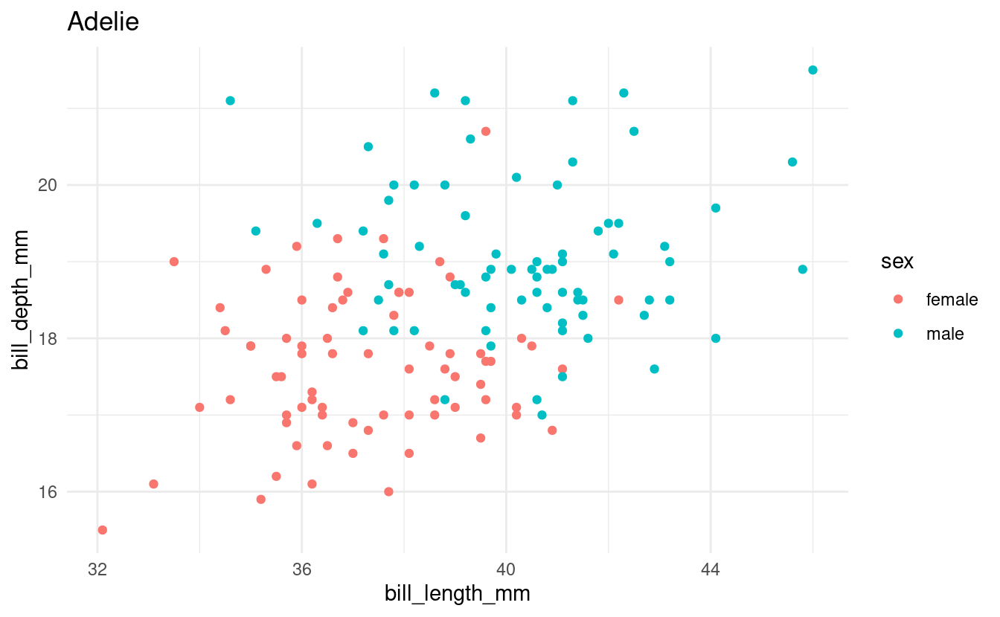
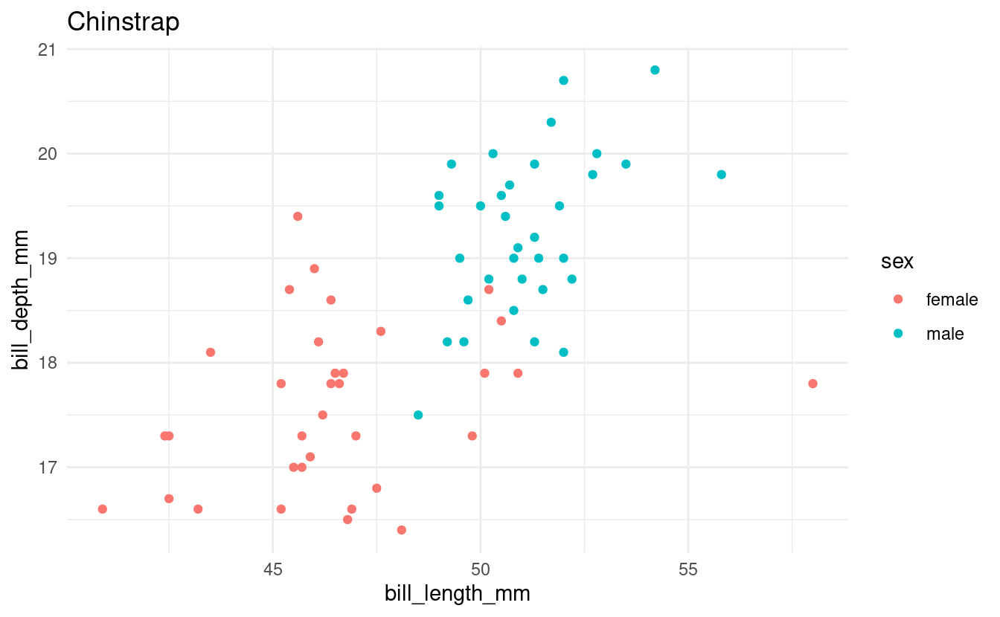
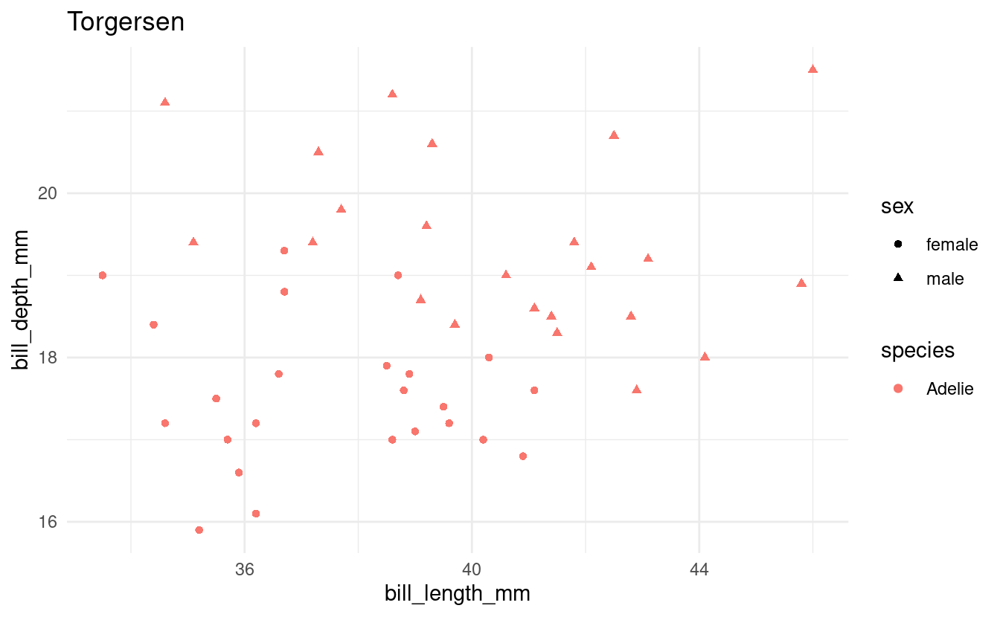
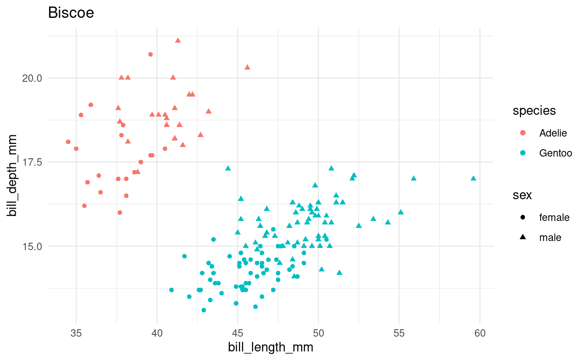
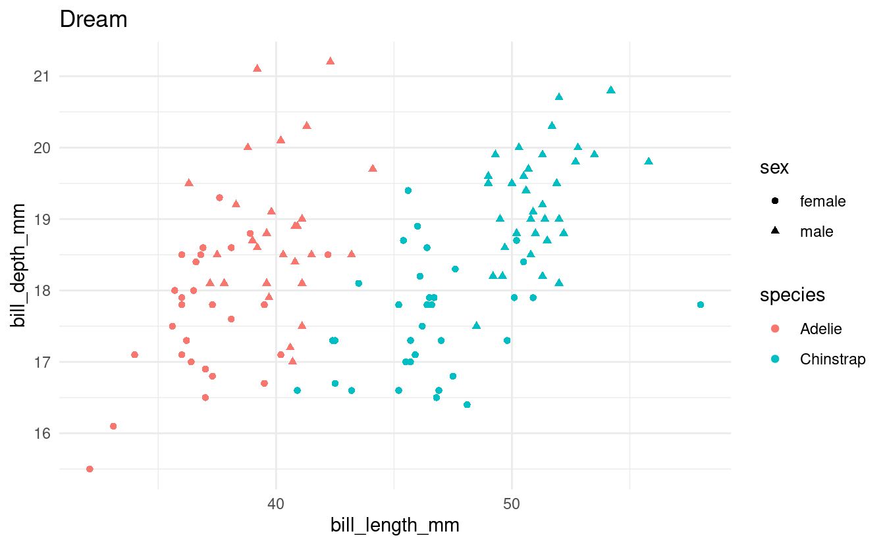
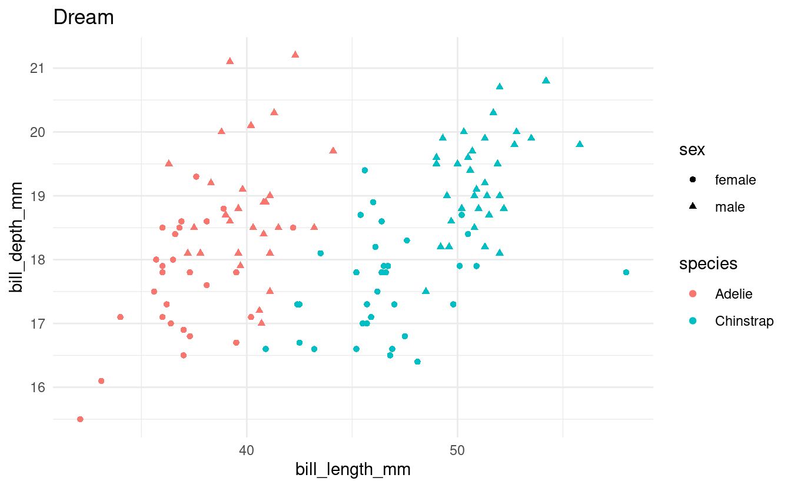

S03E08: For Loops and If Statements
How to, once again, repeat operations without repeating your code
 Artwork by @allison_horst
Artwork by @allison_horst
Housekeeping
New to Code Club?
Check out the Code Club Computer Setup instructions, which also has pointers for if you’re new to R or RStudio.
Session goals
Today, you will learn:
- The basics of
forloops. - How to print and save output from
forloops - How to use
ifstatements
R packages we will use
## This will _install_ the packages only if you don't already have them:
if (!require(palmerpenguins)) install.packages("palmerpenguins")
if (!require(tidyverse)) install.packages("tidyverse")
if (!require(glue)) install.packages("glue")
## This will _load_ the packages:
library(palmerpenguins)
library(tidyverse)
library(glue)I – Introduction
Last week, we learned that we should avoid copy-pasting our code when we want to repeat operations.
We also focused on one alternative approach: making use of R’s vectorization capabilities. When passed a vector, most functions will automatically be performed separately for all elements in the vector, and you don’t need to explicitly iterate over (e.g., loop over) these elements:
c(2.5, 4.1, 7, 3.6) * 0.45
#> [1] 1.125 1.845 3.150 1.620However, vectorization can only be applied to a specific set of problems. A more universal solution when you need to repeat operations is iteration. The two main iteration approaches in R involve loops and functionals.
Today, we will focus on loops and over the next two weeks, Mike Sovic will teach us about functionals.
In R, functionals like apply and map are often preferred over loops because they are more elegant and succinct than loops – but this can also make them harder to understand.
Loops are a good place to start learning to use iteration because:
-
They make the iteration aspect explicit and are therefore more intuitive than functionals.
-
They can easily accommodate longer blocks of code without the need to also write your own function.
-
They are a near-universal feature in programming languages and are a very common sight in languages like Python and Bash, so they are good to familiarize yourself with.
Today, we will talk about the most common type of loop: the for loop. (Other types of loops in R are while loops and repeat loops – I honestly never use those.)
II – for loop basics
for loops iterate over a collection, such as a vector, allowing you to perform one or more actions for each element in the collection, one element at a time.
The basic syntax is as follows:
for (item in collection) {
# ...code to do things for each element, one at a time...
}
The simple example below will help to understand the syntax:
(Note that this example is so simple that vectorization would have also worked; we’ll move on to more realistic loop examples in the next section.)
## A loop to print negated values:
for (a_number in c(1, 2, 3, 4)) { # We iterate over 1, 2, 3, 4
print(a_number * -1) # Multiply each number by -1
}
#> [1] -1
#> [1] -2
#> [1] -3
#> [1] -4On the first line, we initialized the for loop, telling it to assign each item in the vector to the variable a_number, one at a time.
The code inside the loop (which is inside the {} braces and is indented) will run as many times as there are elements in the collection. Each time it runs, a_number contains a single value from the vector.
In other words, what you are instructing R to do is:
# Iteration 1
a_number <- 1
print(a_number * -1)
#> [1] -1
# Iteration 2
a_number <- 2
print(a_number * -1)
#> [1] -2
# Iteration 3
a_number <- 3
print(a_number * -1)
#> [1] -3
# Iteration 4
a_number <- 4
print(a_number * -1)
#> [1] -4## Just printing the same loop for reference:
for (a_number in c(1, 2, 3, 4)) { # We iterate over 1, 2, 3, 4
print(a_number * -1) # Multiply each number by -1
}-
The name given to the variable that will contain one item at a time, here
a_number, is an arbitrary choice, just like when you assign variables the regular way (a_number <- 1). -
The collection is usually a vector or a list: one that already exists or which you create on the fly in the loop initialization line, like we did above with
c(1, 2, 3, 4). -
for, the parentheses(),in, and the curly braces{}are all fixed elements offorloops. Only the braces can be omitted in some cases, as we’ll see below.
The variable in the loop
As mentioned, the variable name that we assign to is arbitrary: we could use anything, as long as we reference it with the same name inside the loop:
## Example 1 with a different variable name: "positive_number"
for (positive_number in c(1, 2, 3, 4)) {
print(positive_number * -1)
}
#> [1] -1
#> [1] -2
#> [1] -3
#> [1] -4
## Example 2 with a different variable name: "i"
for (i in c(1, 2, 3, 4)) {
print(i * -1)
}
#> [1] -1
#> [1] -2
#> [1] -3
#> [1] -4Note also that we actually don’t have to use the variable we are looping over: we could also use a for loop as a roundabout way to simply repeat something as many times as there are values in our collection:
for (i in c(1, 2, 3, 4)) {
print("Yes!") # Print "Yes!" in each of our four iterations
}
#> [1] "Yes!"
#> [1] "Yes!"
#> [1] "Yes!"
#> [1] "Yes!"Printing the output
In a loop, we need to explicitly use the print() function if we want to print something to screen – nothing will be printed if we omit this:
for (i in 1:4) {
i * -1
}In practice, you might often want to store the result in a variable rather than just printing it to screen, and we’ll see how to do that in the next section.
Breakout Rooms I
Copy and run this code to get set up!
## This will _install_ the packages only if you don't already have them:
if (!require(palmerpenguins)) install.packages("palmerpenguins")
if (!require(tidyverse)) install.packages("tidyverse")
if (!require(glue)) install.packages("glue")
## This will _load_ the packages:
library(palmerpenguins)
library(tidyverse)
library(glue)Exercise 1: First loops
Loop over the numbers 5 through 10; and inside the loop, simply print each number to screen.
(Of course, feel free to look at the examples above for reference – but type out the loop to get the syntax under your fingers.)
Solution (click here)
for (i in 5:10) {
print(i)
}
#> [1] 5
#> [1] 6
#> [1] 7
#> [1] 8
#> [1] 9
#> [1] 10Loop over the first 8 penguin bill depth values (column bill_depth_mm in the penguins dataframe), and in each iteration of the loop, add 100 to the focal bill depth. Print the results to screen.
Hints on extracting the bill depths (click here)
-
One way to extract the
bill_depth_mmcolumn as a vector is usingpenguins$bill_depth_mm. (Another ispenguins %>% pull(bill_depth_mm).) -
One way to take the first 8 values of a vector
my_vecis usingmy_vec[1:8]. (Another ismy_vec %>% head(8).)
Solution (click here)
for (bill_dep in penguins$bill_depth_mm[1:8]) {
print(bill_dep + 100)
}
#> [1] 118.7
#> [1] 117.4
#> [1] 118
#> [1] NA
#> [1] 119.3
#> [1] 120.6
#> [1] 117.8
#> [1] 119.6Exercise 2: Keeping track of the iteration number
Create a vector with the first names of everyone in your breakout room group (e.g. first_names <- c("Phillida", "Ethan", "Tonci")), and a second vector with everyone’s last names.
Next, use a loop to print your breakout room’s equivalent of the following:
The name of person 1 is Phillida Maas
The name of person 2 is Ethan Hope
The name of person 3 is Tonci Elwes
Hint 1 (click here)
-
To get the numbers (
person 1etc) and the corresponding first and last names, you’ll want to loop over a vector of numbers (indices), in this case1:3. You can then extract the corresponding names inside the loop by indexing with this number (as infirst_names[1]). -
Ideally, you will determine the number of names in your room with code instead of just counting them manually – you can do so using the
length()function. That way, you could use the exact same code if you had a different number of people in your group.
Hint 2: code with blanks (click here)
Use the following code as a template, replacing the ... blanks:
Solution (click here)
first_names <- c("Phillida", "Ethan", "Tonci")
last_names <- c("Maas", "Hope", "Elwes")
n_names <- length(first_names) # get the number of first or last names
for (index in 1:n_names) {
first_name <- first_names[index]
last_name <- last_names[index]
string <- glue("The name of person {index} is {first_name} {last_name}")
print(string)
}
#> The name of person 1 is Phillida Maas
#> The name of person 2 is Ethan Hope
#> The name of person 3 is Tonci ElwesIII – Plots or files as output
In the examples and exercises so far, we have simply printed some text output to screen. While this can be useful, in practice, you might often be interested in doing one of the following:
-
Printing a plot in each iteration of the loop
-
Saving results or a plot to file in each iteration of the loop
-
Creating a single R object (e.g. a dataframe) across the entire loop: in each iteration, you add one element (e.g. a row) to the object.
The latter scenario is especially verbose to do with a loop and moreover, the most intuitive way of doing that is unnecessarily slow (which is a key reason why loops in R have the reputation of being slow). I explain the way to store all loop output in one object in the bonus materials below but when you need to do this, a functional approach is particularly worth considering – we’ll learn how to do so in the next few weeks.
Instead, let’s take a look at creating plots and saving files in loops. We’ll also take this opportunity to explicitly see how we change a bit of code that does something once in order to use it in a loop.
Say that we want to make a scatterplot of bill lengths vs. bill depths in all penguin species in the penguins dataframe. We’ll start with some code to make a scatterplot for one of the three species:
## Select just the data for the focal species:
one_penguin_df <- penguins %>%
filter(species == "Gentoo") %>% # Select only rows with Gentoo penguins
drop_na() # Remove rows with NAs
## Create the plot:
ggplot(one_penguin_df) +
geom_point(aes(x = bill_length_mm, y = bill_depth_mm, color = sex)) +
labs(title = "Gentoo") +
theme_minimal()

How can we adapt this code to run it for all three penguin species with a loop?
Since we will loop over the species, we’ll start by saving the species names in a vector:
all_penguin_species <- unique(penguins$species)Next, we write the loop, looping over our vector of species names.
The code inside the loop is going to be nearly identical to the code above, except that we use the variable focal_species instead of the literal string “Gentoo” (that way, we make a plot for each species and not three plots for Gentoo Penguins):
for (focal_species in all_penguin_species) {
## Select just the data for the focal species:
one_penguin_df <- penguins %>%
filter(species == focal_species) %>% # Using the `focal_species` variable
drop_na()
## Create the plot:
p <- ggplot(one_penguin_df) +
geom_point(aes(x = bill_length_mm, y = bill_depth_mm, color = sex)) +
labs(title = focal_species) + # Using the `focal_species` variable
theme_minimal()
## Print the plot:
print(p)
}

Note that the code above would be exactly the same regardless of whether we had 3 or all 18 species of penguins in the world in this dataframe.
Now, let’s see an example where instead of just printing the plots, we wanted to save each plot in an appropriately named file:
for (focal_species in all_penguin_species) {
## Select just the data for the focal species:
one_penguin_df <- penguins %>%
filter(species == focal_species) %>%
drop_na()
## Create the plot:
p <- ggplot(one_penguin_df) +
geom_point(aes(x = bill_length_mm, y = bill_depth_mm, color = sex)) +
labs(title = focal_species) +
theme_minimal()
## Save the plot
filename <- glue("{focal_species}_bill-len_bill-dp.png")
ggsave(filename, p) # Save the plot to file!
}This would create the following png files:
# Adelie_bill-len_bill-dp.png
# Gentoo_bill-len_bill-dp.png
# Chinstrap_bill-len_bill-dp.pngSimilarly, it is straightforward to save a text file with results in each iteration of a loop:
for (focal_species in all_penguin_species) {
## Select just the data for the focal species:
one_penguin_df <- penguins %>%
filter(species == focal_species) %>%
drop_na()
## Save the results in a tab-separated values (tsv) file:
filename <- glue("{focal_species}.tsv")
write_tsv(one_penguin_df, filename) # Save the dataframe to file!
}This would create the following text files:
# Adelie.tsv
# Gentoo.tsv
# Chinstrap.tsvIV – if statements
if statements are similar in syntax to for loops, and are also considered a “control flow” structure. But their purpose is different from loops: instead of iterating, if statements do something once and they only do it when a condition is fulfilled.
For instance, we may want to check in a script whether a certain directory (folder) exists on our computer, and if it doesn’t, then we create the directory:
## `!dir.exists()` will be `TRUE` if the directory doesn't already exist
## `!` inverts a logical, so the below says "If the directory does _not_ exist"
if (!dir.exists("important_directory")) {
print("Creating new directory")
dir.create("important_directory")
} else {
print("Dir already exists")
}Inside the parentheses () after if, we should define a test that evaluates to either TRUE or FALSE. If the test evaluates to TRUE, whatever is inside the curly braces {} will be executed, and if it is FALSE, what is inside the curly braces will be ignored.
We can optionally add an else clause: what to do if the test evaluated to FALSE. (And for more complicated cases, else if clauses can add additional tests and actions.)
if statements are commonly combined with for loops – we may want to only execute the functions in our loop for items in our collection that fulfill a certain condition:
for (one_number in 1:10) {
if (one_number > 7) { # Only `TRUE` for numbers >7
print(one_number) # Hence, this is only executed for numbers >7
}
}
#> [1] 8
#> [1] 9
#> [1] 10Like in for loops, braces can be omitted in if statements in one-liners:
for (one_number in 1:10) if (one_number > 7) print(one_number)
#> [1] 8
#> [1] 9
#> [1] 10Breakout Rooms II
Exercise 3: A plotting loop
Using a loop and the penguins dataframe, produce a separate scatterplot for each island with bill length vs. body weight, using different colors for the species and different shapes for the sexes.
Print each plot and save each plot to file.
Hints (click here)
-
The loop plotting example we went through above have almost the same code that you’ll need here, so take another look at that if you’re stuck.
-
Islands are in the
islandcolumn and penguin sexes are in thesexcolumn. -
Use the
shapeaesthetic in ggplot2 to get different shapes for the sexes.
Solution (click here)
all_islands <- unique(penguins$island)
for (focal_island in all_islands) {
## Select just the data for the focal island:
one_island_df <- penguins %>%
filter(island == focal_island) %>%
drop_na()
## Create the plot:
p <- ggplot(one_island_df) +
geom_point(aes(x = bill_length_mm, y = bill_depth_mm,
color = species, shape = sex)) +
labs(title = focal_island) +
theme_minimal()
## Save and print the plot
filename <- glue("{focal_island}_bill-len_bill-dp.png")
ggsave(filename, p)
print(p)
}

Exercise 4: if in a loop
In the previous exercise, you should have noticed that one island only has a single species of penguin.
Let’s say that we don’t want to create this plot for islands with only a single species. Modify your loop from the previous exercise to include an if statement such that you will only make plots for islands with multiple species of penguins.
Hints (click here)
You’ll want to count the number of distinct species in the dataframe after filtering it to contain penguins for one island only. One way to do that is using length(unique(...)).
Solution (click here)
all_islands <- unique(penguins$island)
for (focal_island in all_islands) {
## Select just the data for the focal island:
one_island_df <- penguins %>%
filter(island == focal_island) %>%
drop_na()
## Check how many species there are:
n_species <- length(unique(one_island_df$species))
if (n_species > 1) {
## Create the plot:
p <- ggplot(one_island_df) +
geom_point(aes(x = bill_length_mm, y = bill_depth_mm,
color = species, shape = sex)) +
labs(title = focal_island) +
theme_minimal()
## Save and print the plot
filename <- glue("{focal_island}_bill-len_bill-dp.png")
ggsave(filename, p)
print(p)
}
}

Bonus: Add an else clause to print a message to screen that no plot will be created for the focal island.
Solution (click here)
all_islands <- unique(penguins$island)
for (focal_island in all_islands) {
## Select just the data for the focal species:
one_island_df <- penguins %>%
filter(island == focal_island) %>%
drop_na()
## Check how many species there are
n_species <- length(unique(one_island_df$species))
if (n_species > 1) {
## Create the plot:
p <- ggplot(one_island_df) +
geom_point(aes(x = bill_length_mm, y = bill_depth_mm,
color = species, shape = sex)) +
labs(title = focal_island) +
theme_minimal()
## Save and print the plot
filename <- glue("{focal_island}_bill-len_bill-dp.png")
ggsave(filename, p)
print(p)
} else {
print(glue("Not creating a plot for {focal_island}"))
}
}
#> Not creating a plot for Torgersen
 

Bonus Material
Test operators and functions
Common test operators and functions include:
==and!=to test for (in)equality for numbers and characters alike>,<,>=and<=for numeric comparisons%in%to test for “group membership” (see examples below)is.na()andis.null()to test forNAandNULLvalues, respectively- Any test can be negated (inverted) with an exclamation mark
!
Some examples:
8 != 8
#> [1] FALSE
8 %in% c(5, 8, 10) # 8 is contained in the vector 5, 8, 10
#> [1] TRUE
8 %in% c(10:20) # 8 is not contained in the vector 10:20
#> [1] FALSE
"Adelie" %in% c("Gentoo", "Adelie")
#> [1] TRUE
!is.na(8)
#> [1] TRUEYou can also combine tests with & (logical and) and | (logical or):
# With `&`, TRUE is returned if both tests are TRUE:
8 == 8 & !is.na(8)
#> [1] TRUE
8 == 8 & is.na(8)
#> [1] FALSE
# With `|`, TRUE is returned if at least one of the tests is TRUE:
8 == 8 | !is.na(8)
#> [1] TRUE
8 == 8 | is.na(8)
#> [1] TRUE
8 != 8 | is.na(8)
#> [1] FALSEStoring loop output
If we want the output to be saved in an object of some kind, we need to explicitly make an assignment in each iteration of the loop. This is where we need to start paying attention to the design of our loop. Unless computational speed is of no concern, you should avoid growing an object in each iteration of the loop.
For example, you might be inclined to do the following if you wanted to compute and store the medians of each column in a data frame:
## We initialize a vector in which we collect the column medians:
column_medians <- vector()
for (column_number in 3:6) {
## We extract one column using "dataframe_name[[column_number]]":
column_median <- median(penguins[[column_number]], na.rm = TRUE)
## We add the single-column median to our vector of medians:
column_medians <- c(column_medians, column_median)
}
column_medians
#> [1] 44.45 17.30 197.00 4050.00Similarly, if you were working with a data frame, you may be tempted to add a column (with cbind()) or a row (with rbind()) to the data frame in each iteration of the loop.
The problem with these approaches is that R has to create an entirely new object in each iteration of the loop, because the object’s memory requirements keep increasing.
Instead, before you start the loop, you’ll want to give the final vector (here, column_medians) the appropriate size:
column_medians <- vector(length = length(3:6))
for (column_number in 3:6) {
column_median <- median(penguins[[column_number]], na.rm = TRUE)
column_medians[column_number] <- column_median
}
column_medians
#> [1] 0.00 0.00 44.45 17.30 197.00 4050.00Note that for very small problems, such as the example above, there will not be a noticeable difference in computing time between pre-assigning a properly sized object versus growing an object inside the loop. However, it is still good to get into the habit of pre-assigning an object of the right size.
Some summary guidelines for loops, especially when you are working with large datasets and speed is an issue:
- Don’t use a loop when you can instead use vectorized operations.
- When you write a loop, avoid doing things inside the loop that don’t need to be repeated.
- Don’t grow objects inside the loop. Instead, pre-assign an object large enough to contain all output of the loop and fill it in inside the loop.
Further reading
-
The iteration chapter in Hadley Wickham’s R for Data Science (2017). Doesn’t really cover
ifstatements. -
Software Carpentry Control Flow lesson. Starts out with
ifstatements.